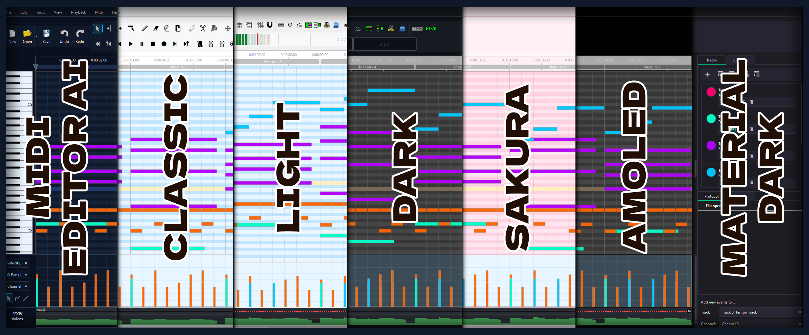
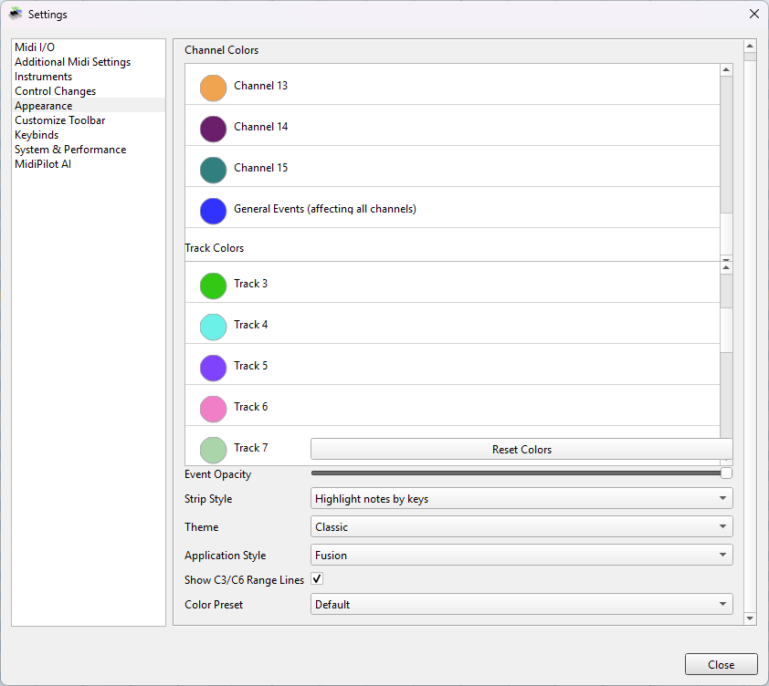
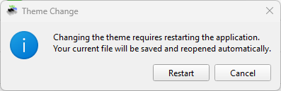
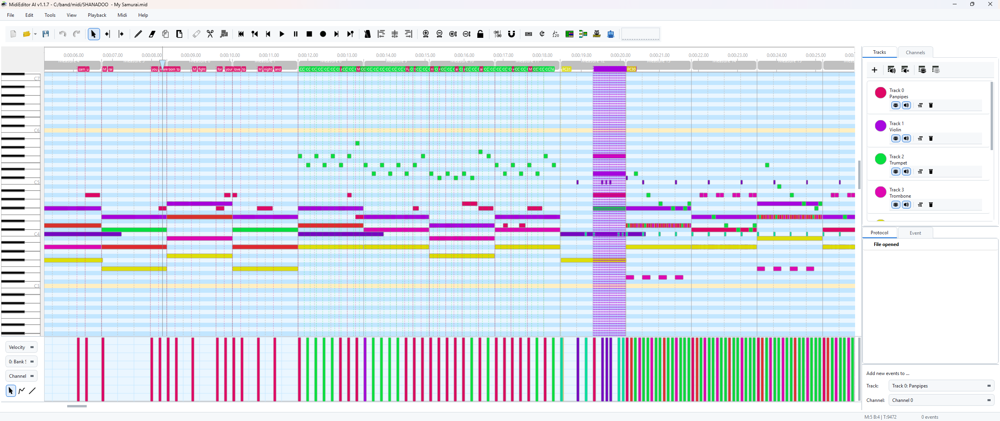

{kind=link}
{kind=link}

The MIDI Visualizer in action — one bar per channel, animated at ~30 fps.
MidiEditor AI ships with seven built-in themes that restyle the entire application — toolbars, lists, scrollbars, dialogs, the piano roll, velocity editor, and every custom-painted widget. Pick the look that suits your workflow and time of day.

All themes applied to the same MIDI file — pick your vibe.
Open Edit → Settings… (or press Ctrl+,) and switch to the Appearance tab. The panel is wrapped in a scroll area so all settings are reachable at any window size. From top to bottom you can:

Settings → Appearance — Theme, color preset, timeline marker toggles, and collapsible color pickers.
🔄 Theme changes require a restart. When you select a new theme from the dropdown, a confirmation dialog appears. Click Restart to apply immediately — the app saves your work, restarts, and re-opens the Appearance settings so you’re right back where you left off.

The restart confirmation popup — Cancel keeps your current theme.
Each theme defines a complete colour palette — backgrounds, accents, borders, text, and all custom-painted editor areas. Hover over the swatches below to see the hex values.
Deep blue-black inspired by GitHub’s dark mode. Easy on the eyes for late-night editing sessions.
Clean white palette for well-lit environments. High contrast, classic look.
Light cherry blossom aesthetic with soft pink accents. Piano keys are tinted lavender blush.
Pure black backgrounds with warm orange accents. Maximum contrast, ideal for OLED screens.
Charcoal purple-gray base with teal accents. Inspired by Material Design dark themes.
Follows your Windows dark/light mode setting. Switches automatically between Dark and Light.
Original system-native MidiEditor look. No QSS applied — uses your OS window style.
| Theme | Background | Accent | Type | Title Bar | Best For |
|---|---|---|---|---|---|
| Dark | #0d1117 | #58a6ff blue |
Dark | Dark | Late-night editing |
| Light | #ffffff | #0969da blue |
Light | Light | Daytime / well-lit rooms |
| Sakura | #fff5f8 | #db7093 pink |
Light | Light | Cherry blossom vibes |
| AMOLED | #000000 | #e67e22 orange |
Dark | Dark | OLED screens / max contrast |
| Material Dark | #1e1d23 | #04b97f teal |
Dark | Dark | Material Design fans |
| System | Follows OS setting | Auto | Auto | Set it and forget it | |
| Classic | Native OS widgets | Native | Native | Original MidiEditor look | |
In the same Appearance panel you can choose from 10 color presets that instantly restyle the channel and track colors in the piano roll. The selected preset is remembered across sessions.
The Timeline Markers feature overlays visual indicators for Program Change, Control Change, and Text/Marker events directly on the piano roll. Each marker type can be toggled independently in Settings → Appearance.
PC0, CC7, lyric text)
Timeline markers in action — Program Change and Control Change events displayed as dashed lines and badges below the ruler.
💡 Tip: Timeline markers make it easy to spot instrument switches and volume/pan automation at a glance. Combine with Color by Track to match the note colours.
The MIDI Visualizer is a real-time 16-channel equalizer bar display embedded in the toolbar. Each bar represents one MIDI channel and animates based on note velocity during playback — green-to-blue colour interpolation with smooth decay.
The MIDI Visualizer in action — one bar per channel, animated at ~30 fps.
| Feature | Details |
|---|---|
| Channels | 16 bars (one per MIDI channel), only active channels show activity |
| Colors | Green (low velocity) → Blue (high velocity) interpolation |
| Animation | Smooth decay at ~30 fps, thread-safe atomic reads |
| Toggle | Enable/disable in Settings → Layout → Customize Toolbar |
| Dark mode | Icon auto-inverts for dark themes |
When you change the theme:
--open-settings flag.💡 Why restart? Qt caches icons and some widget metrics at startup. A full restart ensures every icon, toolbar, and custom-painted widget reflects the new theme perfectly — no stale colours or mismatched icons.